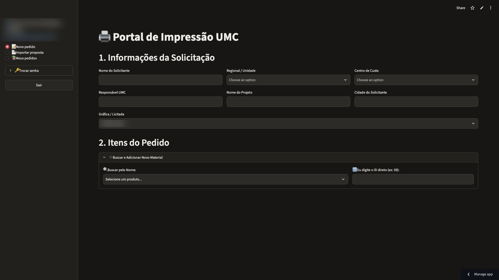

O núcleo de criação do Sebrae/PR produz o material dos eventos e das regionais do estado: lonas, banners, displays, adesivos e serviços de design. Quem produz não é o núcleo, e sim empresas contratadas por licitação. Cada uma tem um contrato com uma tabela de itens, código Protheus e preço fixo, por m² ou por unidade. Todo pedido sai da planilha desse contrato e entra na esteira de produção no Ummense.
Pede.ai
De um processo manual a um sistema em produção
Plataforma interna do Sebrae/PR pra fazer pedidos às empresas contratadas por licitação. Escolhe o item, informa as medidas e o pedido sai pronto, com o preço do contrato calculado pelo sistema e tudo guardado num banco.
trabalho · sebrae/pr · 2026 · versão final no ar
problema
Pedir material às licitadas era manual: conta de área e sangria na mão, centro de custo trocado entre regionais e nenhum histórico.
meu papel
Concebi e construí o sistema, da regra de negócio na API ao banco, aos testes e à tela.
resultado
Versão final em React no ar desde 23/11, depois de 19 versões. 378 testes automatizados, pedido abrindo em 1,3 s (antes até 8 s) e o fluxo de serviço entregue 3 semanas antes do prazo.
Contexto
Como era
Para pedir uma lona, a pessoa:
- 1. abria a planilha do contrato e achava o item;
- 2. fazia a conta na mão: base e altura, mais a sangria de cada lado, vezes a quantidade, vezes o valor do m²;
- 3. digitava o pedido, a etiqueta de entrega e o card no Ummense;
- 4. conferia se o centro de custo era mesmo da regional que pediu, num mapa com mais de 3 mil centros de custo.
No serviço de design era pior: o estúdio mandava uma proposta em PDF, e alguém conferia linha a linha contra o contrato.
A dor
- Erro de conta: um item por m² com sangria tem cinco etapas, e cada uma é uma chance de errar o valor que vai para a nota.
- Centro de custo trocado: a despesa de uma regional caía no orçamento de outra, e ninguém percebia na hora.
- Retrabalho: o mesmo dado era digitado três vezes, no pedido, na etiqueta e no Ummense.
- Nenhum histórico: o pedido existia só como o arquivo enviado. Repetir um pedido era começar do zero.
Como o Pede.ai resolve
- erro de contao servidor calcula pelo contrato; quem usa só informa medida e quantidade
- centro de custo trocadoalerta na hora, dizendo de que regional é o CC; só segue quem marca que está ciente, e isso fica registrado
- retrabalhoum único preenchimento gera o pedido e a etiqueta, e o card entra sozinho na esteira do Ummense
- sem históricotodo pedido fica no banco: baixar de novo, duplicar, cancelar
- proposta em PDFo sistema lê o PDF e confere cada linha com o contrato; se houver divergência, o registro fica bloqueado
O que ele faz hoje
Impressão: o pedido é montado num carrinho. Nos itens por m², a sangria é opcional, com margem única ou uma por lado. Cada item pode ir pra um destino diferente. Se o centro de custo não bater com a regional, aparece um alerta, e só dá pra seguir marcando que está ciente. No fim sai um .zip com o pedido, a etiqueta e os títulos do sistema de gestão.
Serviço: o estúdio manda a proposta em PDF, o Pede.ai lê o arquivo e confere cada linha com o contrato: item, código, valor, subtotal e total. Se algo não bater, o registro fica bloqueado. Testei com 8 propostas reais, em dois layouts diferentes: as 22 linhas e os 8 totais foram lidos certos.
Os dois fluxos têm login individual, histórico, baixar os arquivos de novo, duplicar e cancelar.
Onde começou: o MVP


A versão final
A interface final, em React, entrou no ar em 23/11 e substituiu o MVP.


Decisões que guiam o sistema
-
01
Validar antes de polir
O React já existia, com login e painel, e mesmo assim coloquei o Streamlit em produção primeiro. No dia em que o fluxo de serviço entrou no ar, o atendimento pediu descrição e observação por item. Saiu no mesmo dia.
-
02
Regra no backend, tela simples
Toda a regra de negócio fica na API. O Streamlit só mostra e envia. Quando o React voltar, liga nas mesmas rotas e nada se perde.
-
03
O preço nunca vem de quem usa
A tela manda o item e as medidas. O servidor recalcula pela tabela do contrato e grava um retrato de cada item. Se a tabela mudar amanhã, o recibo de hoje continua certo.
-
04
Nada é apagado
Pedidos, itens e eventos só aceitam inserção, e quem garante é o próprio banco, com gatilhos. Cancelar registra um novo evento.
-
05
Dado de negócio fora do código
Preços, licitadas e o mapa de centro de custo ficam em arquivos de dados. A tabela de preços é gerada da planilha de contratos no "tudo ou nada": se uma aba vier com defeito, nada é gravado.
-
06
Segurança em camadas
Validação na entrada da API e de novo no banco. A API conecta com um usuário que só lê e insere. Senha guardada com scrypt e sessão com token assinado.
Medir antes de mexer
Abrir um pedido no histórico levava até 8 segundos. Medi em produção: rotas sem banco respondiam em 0,3 s, com banco em 2,7 s. A API está nos EUA e o banco em São Paulo, e cada conexão nova custava 1,2 s só pra negociar segurança. Com pool de conexões e cache na sessão, caiu pra cerca de 1,3 s. A suíte de testes caiu de 274 s pra 108 s.
Direto para a esteira
Registrado o pedido de impressão, o Pede.ai cria sozinho o card na esteira de produção do Ummense, com o título, o pedido na descrição e a tag do centro de custo. O Ummense não devolve identificador e duplica o card se o envio se repetir, então o sistema registra o envio e nunca manda o mesmo pedido duas vezes. Se o Ummense estiver fora do ar, o pedido não é afetado.
Registro de versões
Cada versão é uma publicação no servidor: 19 em seis meses, do MVP à versão final.
- v1.1.3 · 25/11ajustecentro de custo gravado inteiro, com o complemento do hífenajustepedido de impressão no modelo do atendimento
- v1.1.2 · 25/11correçãojanela de trocar senha cortada no topo
- v1.1.1 · 24/11ajusteproposta de serviço mais curta
- v1.1 · 23/11novoaba de usuários para o administradorsegurançavirar administrador só pelo servidor
- v1.0.1 · 23/11ajusteregional do CC no aviso e sangria em centímetrosnovoesteira real do Ummense ligada
- v1.0 · 23/11novoversão final em React substitui o MVPsegurançasessão em cookie protegido, nenhuma rota de dado pública e trava de login
- v0.12 · 19/11novopedido vira card no Ummensenovoprotótipo da versão final aprovado
- v0.11 · 13/10novodescrição e observação por item, no mesmo dia do pedido do atendimento
- v0.10 · 13/10novoleitura da proposta em PDF; fluxo de serviço no ar 3 semanas antes do prazo
- v0.9 · 13/10desempenhopedido abrindo em ~1,3 s, antes ~8 s
- v0.8 · 08/10dadoscada licitada configurada à parte; tabela de preços no tudo ou nada
- v0.7 · 06/10novologin individual e meus pedidoscorreçãocentavo a menos em 0,1% dos itens, mais 4 bugs
- v0.6 · 02/10segurançachave de API e usuário de banco que só lê e insere
- v0.5 · 02/10dadosSQLite → PostgreSQL, com tabelas que só aceitam inserção
- v0.4 · 02/10novoetiqueta com um bloco por destinosegurançasenha fora do código
- v0.3 · 25/08novosangria, destino por item e título do Ummensecorreção10 bugs de cálculo e de tela
- v0.2 · 29/05novonúmero do contrato no pedido
- v0.1 · 28/05novoMVP no ar, depois de 3 publicações com falha
O que aprendi
código
Decimaldinheiro sem erro de arredondamento- Rotas FastAPIa regra de negócio num lugar só
- Gatilhos no PostgreSQLtabelas que só aceitam inserção
- Pool de conexõesmenos tempo negociando com o banco
- Testes de estresse e ponta a ponta378 testes em 13 arquivos, com dado aleatório
- scrypt e token assinadosenha e sessão
ferramentas
- Python e FastAPIAPI, no Render
- StreamlitMVP, a primeira versão
- PostgreSQL no Supabasebanco
- pytesttestes
- React e Viteversão final, no ar
- Claude Codepar de programação, guiado pelo CLAUDE.md